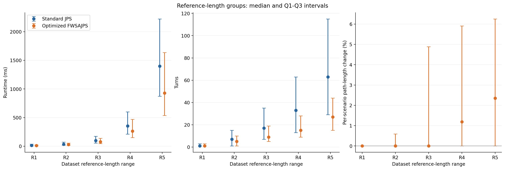
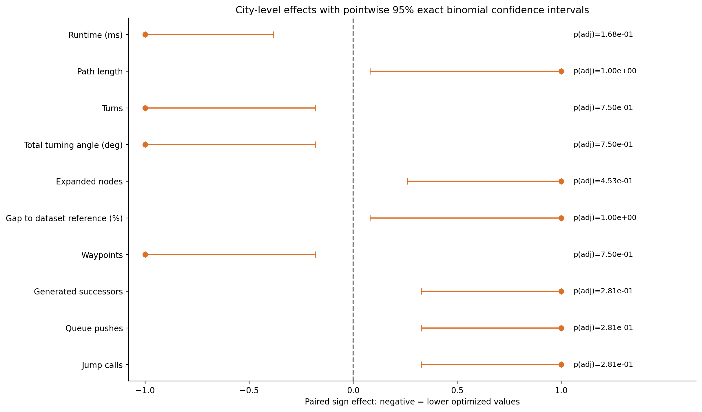

Snapshot: 2026-10-14T11:18:02.034190+03:00
197,490 included matched scenarios; 197,490 successful for both.
Source: Z:\Study\Codex\JPS_updated_miet_conf\results_new_ablation\street\street_all\cache\benchmark_f29e734530e46b1d_street_checkpoint.sqlite3
Invalid pair metadata excluded: 0.
| Algorithm | Saved runs | Successful saved runs | Saved success rate (%) |
|---|---|---|---|
| Standard JPS | 197490 | 197490 | 100.0 |
| Optimized Fast Weighted SA-JPS | 197490 | 197490 | 100.0 |
| Grouping | Group | Matched scenarios | Maps represented | Both successful | Standard JPS successes | Standard JPS success rate (%) | Optimized FWSAJPS successes | Optimized FWSAJPS success rate (%) |
|---|---|---|---|---|---|---|---|---|
| Overall | All | 197490 | 90 | 197490 | 197490 | 100.0 | 197490 | 100.0 |
| Map size | 256 x 256 | 28020 | 30 | 28020 | 28020 | 100.0 | 28020 | 100.0 |
| Map size | 512 x 512 | 56270 | 30 | 56270 | 56270 | 100.0 | 56270 | 100.0 |
| Map size | 1024 x 1024 | 113200 | 30 | 113200 | 113200 | 100.0 | 113200 | 100.0 |
| Reference length | R1: 0 <= L < 100 | 22500 | 90 | 22500 | 22500 | 100.0 | 22500 | 100.0 |
| Reference length | R2: 100 <= L < 250 | 33748 | 90 | 33748 | 33748 | 100.0 | 33748 | 100.0 |
| Reference length | R3: 250 <= L < 500 | 46772 | 90 | 46772 | 46772 | 100.0 | 46772 | 100.0 |
| Reference length | R4: 500 <= L < 1000 | 56270 | 60 | 56270 | 56270 | 100.0 | 56270 | 100.0 |
| Reference length | R5: L >= 1000 | 38200 | 30 | 38200 | 38200 | 100.0 | 38200 | 100.0 |
| Algorithm | Group | Metric | N | Optimized Fast Weighted SA-JPS | Standard JPS |
|---|---|---|---|---|---|
| All | Expanded nodes | 197490 | 86.00 [21.00, 323.00] | 84.00 [19.00, 286.00] | |
| All | Gap to dataset reference (%) | 197475 | 0.00 [0.00, 4.29] | -0.08 [-0.23, 0.00] | |
| All | Path length | 197490 | 488.96 [225.60, 888.25] | 470.86 [218.88, 851.11] | |
| All | Runtime (ms) | 197490 | 128.89 [38.17, 424.78] | 175.18 [48.78, 586.51] | |
| All | Total turning angle (deg) | 197490 | 495.00 [225.00, 1,035.00] | 855.00 [225.00, 2,205.00] | |
| All | Turns | 197490 | 11.00 [5.00, 23.00] | 19.00 [5.00, 49.00] |
| Algorithm | Group | Metric | N | Optimized Fast Weighted SA-JPS | Standard JPS |
|---|---|---|---|---|---|
| 1024 x 1024 | Expanded nodes | 113200 | 91.00 [22.00, 359.00] | 106.00 [22.00, 370.00] | |
| 1024 x 1024 | Gap to dataset reference (%) | 113193 | 0.00 [0.00, 4.19] | -0.06 [-0.15, 0.00] | |
| 1024 x 1024 | Path length | 113200 | 783.71 [387.52, 1,178.56] | 753.95 [377.08, 1,130.80] | |
| 1024 x 1024 | Runtime (ms) | 113200 | 308.34 [112.53, 740.34] | 436.35 [165.09, 1,059.44] | |
| 1024 x 1024 | Total turning angle (deg) | 113200 | 585.00 [225.00, 1,215.00] | 1,035.00 [225.00, 2,925.00] | |
| 1024 x 1024 | Turns | 113200 | 13.00 [5.00, 27.00] | 23.00 [5.00, 65.00] | |
| 256 x 256 | Expanded nodes | 28020 | 77.00 [19.00, 267.00] | 51.00 [15.00, 151.00] | |
| 256 x 256 | Gap to dataset reference (%) | 28013 | 0.00 [-0.18, 4.40] | -0.32 [-0.71, 0.00] | |
| 256 x 256 | Path length | 28020 | 193.68 [95.25, 292.76] | 185.97 [92.92, 278.82] | |
| 256 x 256 | Runtime (ms) | 28020 | 18.57 [7.90, 38.52] | 19.09 [8.59, 36.97] | |
| 256 x 256 | Total turning angle (deg) | 28020 | 405.00 [135.00, 675.00] | 585.00 [225.00, 1,215.00] | |
| 256 x 256 | Turns | 28020 | 9.00 [3.00, 15.00] | 13.00 [5.00, 27.00] | |
| 512 x 512 | Expanded nodes | 56270 | 80.00 [20.00, 293.00] | 72.00 [18.00, 230.00] | |
| 512 x 512 | Gap to dataset reference (%) | 56269 | 0.00 [0.00, 4.45] | -0.13 [-0.31, 0.00] | |
| 512 x 512 | Path length | 56270 | 389.27 [192.28, 586.50] | 374.53 [187.17, 561.58] | |
| 512 x 512 | Runtime (ms) | 56270 | 65.60 [27.35, 144.83] | 86.58 [37.16, 182.31] | |
| 512 x 512 | Total turning angle (deg) | 56270 | 495.00 [180.00, 855.00] | 765.00 [225.00, 1,845.00] | |
| 512 x 512 | Turns | 56270 | 11.00 [4.00, 19.00] | 17.00 [5.00, 40.00] |
| Algorithm | Group | Metric | N | Optimized Fast Weighted SA-JPS | Standard JPS |
|---|---|---|---|---|---|
| R1: 0 <= L < 100 | Expanded nodes | 22500 | 5.00 [3.00, 9.00] | 4.00 [3.00, 8.00] | |
| R1: 0 <= L < 100 | Gap to dataset reference (%) | 22485 | 0.00 [0.00, 0.00] | 0.00 [0.00, 0.00] | |
| R1: 0 <= L < 100 | Path length | 22500 | 50.14 [24.97, 75.57] | 49.94 [24.97, 74.95] | |
| R1: 0 <= L < 100 | Runtime (ms) | 22500 | 10.14 [4.70, 23.74] | 14.38 [6.02, 37.39] | |
| R1: 0 <= L < 100 | Total turning angle (deg) | 22500 | 45.00 [45.00, 135.00] | 45.00 [45.00, 135.00] | |
| R1: 0 <= L < 100 | Turns | 22500 | 1.00 [1.00, 3.00] | 1.00 [1.00, 3.00] | |
| R2: 100 <= L < 250 | Expanded nodes | 33748 | 24.00 [9.00, 74.00] | 20.00 [9.00, 47.00] | |
| R2: 100 <= L < 250 | Gap to dataset reference (%) | 33748 | 0.00 [-0.24, 0.09] | 0.00 [-0.39, 0.00] | |
| R2: 100 <= L < 250 | Path length | 33748 | 179.05 [139.76, 218.20] | 174.47 [137.20, 211.95] | |
| R2: 100 <= L < 250 | Runtime (ms) | 33748 | 28.60 [16.03, 53.83] | 34.01 [18.17, 70.87] | |
| R2: 100 <= L < 250 | Total turning angle (deg) | 33748 | 225.00 [45.00, 495.00] | 315.00 [45.00, 675.00] | |
| R2: 100 <= L < 250 | Turns | 33748 | 5.00 [1.00, 10.00] | 7.00 [1.00, 15.00] | |
| R3: 250 <= L < 500 | Expanded nodes | 46772 | 74.00 [25.00, 230.00] | 66.00 [26.00, 155.00] | |
| R3: 250 <= L < 500 | Gap to dataset reference (%) | 46772 | 0.00 [-0.12, 4.54] | -0.14 [-0.32, 0.00] | |
| R3: 250 <= L < 500 | Path length | 46772 | 367.07 [311.30, 437.21] | 353.47 [301.14, 421.95] | |
| R3: 250 <= L < 500 | Runtime (ms) | 46772 | 78.08 [44.90, 139.02] | 97.00 [54.56, 173.67] | |
| R3: 250 <= L < 500 | Total turning angle (deg) | 46772 | 405.00 [225.00, 855.00] | 765.00 [315.00, 1,575.00] | |
| R3: 250 <= L < 500 | Turns | 46772 | 9.00 [5.00, 19.00] | 17.00 [7.00, 35.00] | |
| R4: 500 <= L < 1000 | Expanded nodes | 56270 | 159.00 [55.00, 453.00] | 162.00 [68.00, 355.00] | |
| R4: 500 <= L < 1000 | Gap to dataset reference (%) | 56270 | 1.02 [0.00, 5.73] | -0.09 [-0.21, 0.00] | |
| R4: 500 <= L < 1000 | Path length | 56270 | 715.18 [615.23, 850.37] | 686.22 [592.75, 814.85] | |
| R4: 500 <= L < 1000 | Runtime (ms) | 56270 | 262.57 [151.00, 470.45] | 353.92 [209.98, 600.85] | |
| R4: 500 <= L < 1000 | Total turning angle (deg) | 56270 | 675.00 [405.00, 1,260.00] | 1,485.00 [585.00, 2,835.00] | |
| R4: 500 <= L < 1000 | Turns | 56270 | 15.00 [9.00, 28.00] | 33.00 [13.00, 63.00] | |
| R5: L >= 1000 | Expanded nodes | 38200 | 390.00 [141.00, 1,058.00] | 472.00 [219.00, 964.00] | |
| R5: L >= 1000 | Gap to dataset reference (%) | 38200 | 2.21 [0.00, 6.11] | -0.10 [-0.16, -0.05] | |
| R5: L >= 1000 | Path length | 38200 | 1,305.10 [1,170.17, 1,438.97] | 1,253.32 [1,126.26, 1,380.46] | |
| R5: L >= 1000 | Runtime (ms) | 38200 | 929.30 [535.27, 1,635.92] | 1,397.43 [871.92, 2,223.05] | |
| R5: L >= 1000 | Total turning angle (deg) | 38200 | 1,215.00 [675.00, 1,980.00] | 2,835.00 [1,305.00, 5,175.00] | |
| R5: L >= 1000 | Turns | 38200 | 27.00 [15.00, 44.00] | 63.00 [29.00, 115.00] |
Negative values mean a reduction. The two percentage measures below are different calculations.
| Grouping | Group | Metric | Metric pairs | Positive baseline pairs | Zero or negative baseline pairs excluded | Difference between medians (%) | Per-scenario change median (%) | Per-scenario change Q1 (%) | Per-scenario change Q3 (%) |
|---|---|---|---|---|---|---|---|---|---|
| Overall | All | Runtime (ms) | 197490 | 197490 | 0 | -26.42 | -32.48 | -44.52 | 0.38 |
| Overall | All | Path length | 197490 | 197475 | 15 | 3.85 | 0.00 | 0.00 | 4.53 |
| Overall | All | Turns | 197490 | 196100 | 1390 | -42.11 | 0.00 | -55.00 | 0.00 |
| Overall | All | Total turning angle (deg) | 197490 | 196100 | 1390 | -42.11 | 0.00 | -54.95 | 0.00 |
| Overall | All | Expanded nodes | 197490 | 197490 | 0 | 2.38 | 1.00 | -16.67 | 54.55 |
| Map size | 256 x 256 | Runtime (ms) | 28020 | 28020 | 0 | -2.73 | -9.45 | -34.51 | 37.88 |
| Map size | 256 x 256 | Path length | 28020 | 28013 | 7 | 4.15 | 0.00 | 0.00 | 5.02 |
| Map size | 256 x 256 | Turns | 28020 | 27636 | 384 | -30.77 | 0.00 | -44.44 | 0.00 |
| Map size | 256 x 256 | Total turning angle (deg) | 28020 | 27636 | 384 | -30.77 | 0.00 | -44.44 | 0.00 |
| Map size | 256 x 256 | Expanded nodes | 28020 | 28020 | 0 | 50.98 | 39.71 | 0.00 | 116.67 |
| Map size | 512 x 512 | Runtime (ms) | 56270 | 56270 | 0 | -24.23 | -31.13 | -43.45 | 2.50 |
| Map size | 512 x 512 | Path length | 56270 | 56269 | 1 | 3.93 | 0.00 | 0.00 | 4.72 |
| Map size | 512 x 512 | Turns | 56270 | 55805 | 465 | -35.29 | 0.00 | -52.63 | 0.00 |
| Map size | 512 x 512 | Total turning angle (deg) | 56270 | 55805 | 465 | -35.29 | 0.00 | -52.63 | 0.00 |
| Map size | 512 x 512 | Expanded nodes | 56270 | 56270 | 0 | 11.11 | 9.09 | -10.00 | 61.82 |
| Map size | 1024 x 1024 | Runtime (ms) | 113200 | 113200 | 0 | -29.34 | -36.58 | -46.86 | -10.42 |
| Map size | 1024 x 1024 | Path length | 113200 | 113193 | 7 | 3.95 | 0.00 | 0.00 | 4.32 |
| Map size | 1024 x 1024 | Turns | 113200 | 112659 | 541 | -43.48 | 0.00 | -59.81 | 0.00 |
| Map size | 1024 x 1024 | Total turning angle (deg) | 113200 | 112659 | 541 | -43.48 | 0.00 | -59.77 | 0.00 |
| Map size | 1024 x 1024 | Expanded nodes | 113200 | 113200 | 0 | -14.15 | 0.00 | -26.18 | 34.34 |
| Reference length | R1: 0 <= L < 100 | Runtime (ms) | 22500 | 22500 | 0 | -29.47 | -37.91 | -43.08 | -16.92 |
| Reference length | R1: 0 <= L < 100 | Path length | 22500 | 22485 | 15 | 0.40 | 0.00 | 0.00 | 0.00 |
| Reference length | R1: 0 <= L < 100 | Turns | 22500 | 21225 | 1275 | 0.00 | 0.00 | 0.00 | 0.00 |
| Reference length | R1: 0 <= L < 100 | Total turning angle (deg) | 22500 | 21225 | 1275 | 0.00 | 0.00 | 0.00 | 0.00 |
| Reference length | R1: 0 <= L < 100 | Expanded nodes | 22500 | 22500 | 0 | 25.00 | 0.00 | 0.00 | 33.33 |
| Reference length | R2: 100 <= L < 250 | Runtime (ms) | 33748 | 33748 | 0 | -15.90 | -31.00 | -42.33 | 8.41 |
| Reference length | R2: 100 <= L < 250 | Path length | 33748 | 33748 | 0 | 2.62 | 0.00 | 0.00 | 0.59 |
| Reference length | R2: 100 <= L < 250 | Turns | 33748 | 33659 | 89 | -28.57 | 0.00 | -22.22 | 0.00 |
| Reference length | R2: 100 <= L < 250 | Total turning angle (deg) | 33748 | 33659 | 89 | -28.57 | 0.00 | -22.22 | 0.00 |
| Reference length | R2: 100 <= L < 250 | Expanded nodes | 33748 | 33748 | 0 | 20.00 | 9.09 | 0.00 | 65.52 |
| Reference length | R3: 250 <= L < 500 | Runtime (ms) | 46772 | 46772 | 0 | -19.50 | -27.93 | -43.14 | 10.02 |
| Reference length | R3: 250 <= L < 500 | Path length | 46772 | 46772 | 0 | 3.85 | 0.00 | 0.00 | 4.89 |
| Reference length | R3: 250 <= L < 500 | Turns | 46772 | 46755 | 17 | -47.06 | 0.00 | -51.85 | 0.00 |
| Reference length | R3: 250 <= L < 500 | Total turning angle (deg) | 46772 | 46755 | 17 | -47.06 | 0.00 | -51.85 | 0.00 |
| Reference length | R3: 250 <= L < 500 | Expanded nodes | 46772 | 46772 | 0 | 12.12 | 12.00 | -10.00 | 74.16 |
| Reference length | R4: 500 <= L < 1000 | Runtime (ms) | 56270 | 56270 | 0 | -25.81 | -30.44 | -46.14 | 1.88 |
| Reference length | R4: 500 <= L < 1000 | Path length | 56270 | 56270 | 0 | 4.22 | 1.19 | 0.00 | 5.91 |
| Reference length | R4: 500 <= L < 1000 | Turns | 56270 | 56261 | 9 | -54.55 | -29.27 | -63.77 | 0.00 |
| Reference length | R4: 500 <= L < 1000 | Total turning angle (deg) | 56270 | 56261 | 9 | -54.55 | -29.27 | -63.77 | 0.00 |
| Reference length | R4: 500 <= L < 1000 | Expanded nodes | 56270 | 56270 | 0 | -1.85 | 3.70 | -28.30 | 58.82 |
| Reference length | R5: L >= 1000 | Runtime (ms) | 38200 | 38200 | 0 | -33.50 | -35.40 | -49.45 | -9.54 |
| Reference length | R5: L >= 1000 | Path length | 38200 | 38200 | 0 | 4.13 | 2.35 | 0.00 | 6.25 |
| Reference length | R5: L >= 1000 | Turns | 38200 | 38200 | 0 | -57.14 | -44.55 | -69.33 | 0.00 |
| Reference length | R5: L >= 1000 | Total turning angle (deg) | 38200 | 38200 | 0 | -57.14 | -44.56 | -69.31 | 0.00 |
| Reference length | R5: L >= 1000 | Expanded nodes | 38200 | 38200 | 0 | -17.37 | -10.96 | -43.79 | 35.73 |
Independent units assumed for inference: 10 source-city groups.
| Map | City | Matched scenarios |
|---|---|---|
| Berlin_0_1024.map | Berlin | 3850 |
| Berlin_0_256.map | Berlin | 930 |
| Berlin_0_512.map | Berlin | 1870 |
| Berlin_1_1024.map | Berlin | 3920 |
| Berlin_1_256.map | Berlin | 910 |
| Berlin_1_512.map | Berlin | 1950 |
| Berlin_2_1024.map | Berlin | 3870 |
| Berlin_2_256.map | Berlin | 960 |
| Berlin_2_512.map | Berlin | 1950 |
| Boston_0_1024.map | Boston | 3840 |
| Boston_0_256.map | Boston | 950 |
| Boston_0_512.map | Boston | 1890 |
| Boston_1_1024.map | Boston | 3720 |
| Boston_1_256.map | Boston | 910 |
| Boston_1_512.map | Boston | 1830 |
| Boston_2_1024.map | Boston | 3870 |
| Boston_2_256.map | Boston | 860 |
| Boston_2_512.map | Boston | 1850 |
| Denver_0_1024.map | Denver | 3680 |
| Denver_0_256.map | Denver | 940 |
| Denver_0_512.map | Denver | 1830 |
| Denver_1_1024.map | Denver | 3770 |
| Denver_1_256.map | Denver | 830 |
| Denver_1_512.map | Denver | 1780 |
| Denver_2_1024.map | Denver | 3700 |
| Denver_2_256.map | Denver | 910 |
| Denver_2_512.map | Denver | 1890 |
| London_0_1024.map | London | 4010 |
| London_0_256.map | London | 1000 |
| London_0_512.map | London | 2080 |
| London_1_1024.map | London | 3410 |
| London_1_256.map | London | 940 |
| London_1_512.map | London | 1870 |
| London_2_1024.map | London | 3840 |
| London_2_256.map | London | 940 |
| London_2_512.map | London | 1910 |
| Milan_0_1024.map | Milan | 3850 |
| Milan_0_256.map | Milan | 910 |
| Milan_0_512.map | Milan | 1780 |
| Milan_1_1024.map | Milan | 3680 |
| Milan_1_256.map | Milan | 870 |
| Milan_1_512.map | Milan | 1800 |
| Milan_2_1024.map | Milan | 3840 |
| Milan_2_256.map | Milan | 970 |
| Milan_2_512.map | Milan | 1950 |
| Moscow_0_1024.map | Moscow | 3630 |
| Moscow_0_256.map | Moscow | 910 |
| Moscow_0_512.map | Moscow | 1830 |
| Moscow_1_1024.map | Moscow | 3870 |
| Moscow_1_256.map | Moscow | 1100 |
| Moscow_1_512.map | Moscow | 1970 |
| Moscow_2_1024.map | Moscow | 4230 |
| Moscow_2_256.map | Moscow | 990 |
| Moscow_2_512.map | Moscow | 2090 |
| NewYork_0_1024.map | NewYork | 3670 |
| NewYork_0_256.map | NewYork | 910 |
| NewYork_0_512.map | NewYork | 1790 |
| NewYork_1_1024.map | NewYork | 3740 |
| NewYork_1_256.map | NewYork | 910 |
| NewYork_1_512.map | NewYork | 1820 |
| NewYork_2_1024.map | NewYork | 3680 |
| NewYork_2_256.map | NewYork | 870 |
| NewYork_2_512.map | NewYork | 1850 |
| Paris_0_1024.map | Paris | 3820 |
| Paris_0_256.map | Paris | 980 |
| Paris_0_512.map | Paris | 1810 |
| Paris_1_1024.map | Paris | 3760 |
| Paris_1_256.map | Paris | 1090 |
| Paris_1_512.map | Paris | 1900 |
| Paris_2_1024.map | Paris | 3990 |
| Paris_2_256.map | Paris | 1060 |
| Paris_2_512.map | Paris | 2190 |
| Shanghai_0_1024.map | Shanghai | 3680 |
| Shanghai_0_256.map | Shanghai | 870 |
| Shanghai_0_512.map | Shanghai | 1730 |
| Shanghai_1_1024.map | Shanghai | 3570 |
| Shanghai_1_256.map | Shanghai | 900 |
| Shanghai_1_512.map | Shanghai | 1780 |
| Shanghai_2_1024.map | Shanghai | 3720 |
| Shanghai_2_256.map | Shanghai | 920 |
| Shanghai_2_512.map | Shanghai | 1810 |
| Sydney_0_1024.map | Sydney | 3650 |
| Sydney_0_256.map | Sydney | 900 |
| Sydney_0_512.map | Sydney | 1790 |
| Sydney_1_1024.map | Sydney | 3670 |
| Sydney_1_256.map | Sydney | 870 |
| Sydney_1_512.map | Sydney | 1790 |
| Sydney_2_1024.map | Sydney | 3670 |
| Sydney_2_256.map | Sydney | 910 |
| Sydney_2_512.map | Sydney | 1890 |
Primary analysis: calculate optimized-minus-JPS differences for matched scenarios; take their median within each map; then take the median of those map summaries within each source city. Each city contributes one value to an exact two-sided sign test. Maps are equally weighted within a city; cities are equally weighted in inference. This tests sign balance of nonzero city summaries, not equality of pooled scenario medians. Related variants and resolutions are not counted as independent replicates.
Primary effect size: paired sign effect = (positive - negative) / nonzero units. Rank-biserial effect is also provided: (positive rank sum - negative rank sum) / total rank sum, using average ranks of absolute nonzero differences. Both range from -1 to +1; negative means lower optimized values. For reference gap, lower does not necessarily mean better. Zero differences are excluded from these denominators; tie counts are reported. All-zero differences yield effect 0 and p=1 by convention.
Holm adjustment covers all metrics and groups separately for each analysis unit; use adjusted p-values for significance at 0.05. Statistical significance is not practical importance. Primary inference still assumes independent source cities and valid city grouping; grouping cannot prove independence. Only 10 source cities are available in the complete Street dataset, so statistical power and p-value resolution are limited. Nonsignificance is not evidence of equivalence. No scenario-level or map-level inferential p-values are presented.
Only jointly successful scenarios with finite values are used. Differences are rounded to 9 decimal places before ranking to suppress floating-point artifacts. Fewer than two nonzero units receive no inferential p-value. CSV values of zero p may reflect numerical underflow; HTML displays these as below machine precision.
| Metric | N units | Nonzero units | Median paired difference | Paired sign effect | Rank-biserial effect | p-value | Holm-adjusted p-value | Significant (Holm < 0.05) | Status |
|---|---|---|---|---|---|---|---|---|---|
| Runtime (ms) | 10 | 10 | -11.44 | -1 | -1 | 1.953e-03 | 1.680e-01 | No | OK |
| Path length | 10 | 6 | 0.3241 | 1 | 1 | 3.125e-02 | 1.000e+00 | No | OK |
| Turns | 10 | 7 | -2 | -1 | -1 | 1.562e-02 | 7.500e-01 | No | OK |
| Total turning angle (deg) | 10 | 7 | -90 | -1 | -1 | 1.562e-02 | 7.500e-01 | No | OK |
| Expanded nodes | 10 | 8 | 3 | 1 | 1 | 7.812e-03 | 4.531e-01 | No | OK |
| Gap to dataset reference (%) | 10 | 6 | 0.1372 | 1 | 1 | 3.125e-02 | 1.000e+00 | No | OK |
| Waypoints | 10 | 7 | -2 | -1 | -1 | 1.562e-02 | 7.500e-01 | No | OK |
| Generated successors | 10 | 9 | 6.75 | 1 | 1 | 3.906e-03 | 2.812e-01 | No | OK |
| Queue pushes | 10 | 9 | 5.75 | 1 | 1 | 3.906e-03 | 2.812e-01 | No | OK |
| Jump calls | 10 | 9 | 5898 | 1 | 1 | 3.906e-03 | 2.812e-01 | No | OK |
| Grouping | Group | Metric | Unit | Matched metric scenarios | Maps | Cities | N units | Nonzero units | Tied units | Optimized lower units | Optimized higher units | Median paired difference | Paired sign effect | Rank-biserial effect | p-value | Test | Status | Holm-adjusted p-value | Significant (Holm < 0.05) |
|---|---|---|---|---|---|---|---|---|---|---|---|---|---|---|---|---|---|---|---|
| Overall | All | Runtime (ms) | City median of map differences (primary) | 197490 | 90 | 10 | 10 | 10 | 0 | 10 | 0 | -11.44 | -1 | -1 | 1.953e-03 | Exact two-sided sign test | OK | 1.680e-01 | No |
| Overall | All | Path length | City median of map differences (primary) | 197490 | 90 | 10 | 10 | 6 | 4 | 0 | 6 | 0.3241 | 1 | 1 | 3.125e-02 | Exact two-sided sign test | OK | 1.000e+00 | No |
| Overall | All | Turns | City median of map differences (primary) | 197490 | 90 | 10 | 10 | 7 | 3 | 7 | 0 | -2 | -1 | -1 | 1.562e-02 | Exact two-sided sign test | OK | 7.500e-01 | No |
| Overall | All | Total turning angle (deg) | City median of map differences (primary) | 197490 | 90 | 10 | 10 | 7 | 3 | 7 | 0 | -90 | -1 | -1 | 1.562e-02 | Exact two-sided sign test | OK | 7.500e-01 | No |
| Overall | All | Expanded nodes | City median of map differences (primary) | 197490 | 90 | 10 | 10 | 8 | 2 | 0 | 8 | 3 | 1 | 1 | 7.812e-03 | Exact two-sided sign test | OK | 4.531e-01 | No |
| Overall | All | Gap to dataset reference (%) | City median of map differences (primary) | 197475 | 90 | 10 | 10 | 6 | 4 | 0 | 6 | 0.1372 | 1 | 1 | 3.125e-02 | Exact two-sided sign test | OK | 1.000e+00 | No |
| Overall | All | Waypoints | City median of map differences (primary) | 197490 | 90 | 10 | 10 | 7 | 3 | 7 | 0 | -2 | -1 | -1 | 1.562e-02 | Exact two-sided sign test | OK | 7.500e-01 | No |
| Overall | All | Generated successors | City median of map differences (primary) | 197490 | 90 | 10 | 10 | 9 | 1 | 0 | 9 | 6.75 | 1 | 1 | 3.906e-03 | Exact two-sided sign test | OK | 2.812e-01 | No |
| Overall | All | Queue pushes | City median of map differences (primary) | 197490 | 90 | 10 | 10 | 9 | 1 | 0 | 9 | 5.75 | 1 | 1 | 3.906e-03 | Exact two-sided sign test | OK | 2.812e-01 | No |
| Overall | All | Jump calls | City median of map differences (primary) | 197490 | 90 | 10 | 10 | 9 | 1 | 0 | 9 | 5898 | 1 | 1 | 3.906e-03 | Exact two-sided sign test | OK | 2.812e-01 | No |
| Map size | 256 x 256 | Runtime (ms) | City median of map differences (primary) | 28020 | 30 | 10 | 10 | 10 | 0 | 7 | 3 | -0.4976 | -0.4 | -0.5636 | 3.438e-01 | Exact two-sided sign test | OK | 1.000e+00 | No |
| Map size | 256 x 256 | Path length | City median of map differences (primary) | 28020 | 30 | 10 | 10 | 6 | 4 | 0 | 6 | 0.3241 | 1 | 1 | 3.125e-02 | Exact two-sided sign test | OK | 1.000e+00 | No |
| Map size | 256 x 256 | Turns | City median of map differences (primary) | 28020 | 30 | 10 | 10 | 6 | 4 | 6 | 0 | -2 | -1 | -1 | 3.125e-02 | Exact two-sided sign test | OK | 1.000e+00 | No |
| Map size | 256 x 256 | Total turning angle (deg) | City median of map differences (primary) | 28020 | 30 | 10 | 10 | 6 | 4 | 6 | 0 | -90 | -1 | -1 | 3.125e-02 | Exact two-sided sign test | OK | 1.000e+00 | No |
| Map size | 256 x 256 | Expanded nodes | City median of map differences (primary) | 28020 | 30 | 10 | 10 | 10 | 0 | 0 | 10 | 13.5 | 1 | 1 | 1.953e-03 | Exact two-sided sign test | OK | 1.680e-01 | No |
| Map size | 256 x 256 | Gap to dataset reference (%) | City median of map differences (primary) | 28013 | 30 | 10 | 10 | 6 | 4 | 0 | 6 | 0.1372 | 1 | 1 | 3.125e-02 | Exact two-sided sign test | OK | 1.000e+00 | No |
| Map size | 256 x 256 | Waypoints | City median of map differences (primary) | 28020 | 30 | 10 | 10 | 6 | 4 | 6 | 0 | -2 | -1 | -1 | 3.125e-02 | Exact two-sided sign test | OK | 1.000e+00 | No |
| Map size | 256 x 256 | Generated successors | City median of map differences (primary) | 28020 | 30 | 10 | 10 | 10 | 0 | 0 | 10 | 21.75 | 1 | 1 | 1.953e-03 | Exact two-sided sign test | OK | 1.680e-01 | No |
| Map size | 256 x 256 | Queue pushes | City median of map differences (primary) | 28020 | 30 | 10 | 10 | 10 | 0 | 0 | 10 | 20.25 | 1 | 1 | 1.953e-03 | Exact two-sided sign test | OK | 1.680e-01 | No |
| Map size | 256 x 256 | Jump calls | City median of map differences (primary) | 28020 | 30 | 10 | 10 | 10 | 0 | 0 | 10 | 4015 | 1 | 1 | 1.953e-03 | Exact two-sided sign test | OK | 1.680e-01 | No |
| Map size | 512 x 512 | Runtime (ms) | City median of map differences (primary) | 56270 | 30 | 10 | 10 | 10 | 0 | 10 | 0 | -11.44 | -1 | -1 | 1.953e-03 | Exact two-sided sign test | OK | 1.680e-01 | No |
| Map size | 512 x 512 | Path length | City median of map differences (primary) | 56270 | 30 | 10 | 10 | 5 | 5 | 0 | 5 | 1.243 | 1 | 1 | 6.250e-02 | Exact two-sided sign test | OK | 1.000e+00 | No |
| Map size | 512 x 512 | Turns | City median of map differences (primary) | 56270 | 30 | 10 | 10 | 6 | 4 | 6 | 0 | -2 | -1 | -1 | 3.125e-02 | Exact two-sided sign test | OK | 1.000e+00 | No |
| Map size | 512 x 512 | Total turning angle (deg) | City median of map differences (primary) | 56270 | 30 | 10 | 10 | 6 | 4 | 6 | 0 | -90 | -1 | -1 | 3.125e-02 | Exact two-sided sign test | OK | 1.000e+00 | No |
| Map size | 512 x 512 | Expanded nodes | City median of map differences (primary) | 56270 | 30 | 10 | 10 | 7 | 3 | 0 | 7 | 3 | 1 | 1 | 1.562e-02 | Exact two-sided sign test | OK | 7.500e-01 | No |
| Map size | 512 x 512 | Gap to dataset reference (%) | City median of map differences (primary) | 56269 | 30 | 10 | 10 | 5 | 5 | 0 | 5 | 0.2643 | 1 | 1 | 6.250e-02 | Exact two-sided sign test | OK | 1.000e+00 | No |
| Map size | 512 x 512 | Waypoints | City median of map differences (primary) | 56270 | 30 | 10 | 10 | 6 | 4 | 6 | 0 | -2 | -1 | -1 | 3.125e-02 | Exact two-sided sign test | OK | 1.000e+00 | No |
| Map size | 512 x 512 | Generated successors | City median of map differences (primary) | 56270 | 30 | 10 | 10 | 8 | 2 | 0 | 8 | 5.5 | 1 | 1 | 7.812e-03 | Exact two-sided sign test | OK | 4.531e-01 | No |
| Map size | 512 x 512 | Queue pushes | City median of map differences (primary) | 56270 | 30 | 10 | 10 | 8 | 2 | 0 | 8 | 4.75 | 1 | 1 | 7.812e-03 | Exact two-sided sign test | OK | 4.531e-01 | No |
| Map size | 512 x 512 | Jump calls | City median of map differences (primary) | 56270 | 30 | 10 | 10 | 9 | 1 | 0 | 9 | 7033 | 1 | 1 | 3.906e-03 | Exact two-sided sign test | OK | 2.812e-01 | No |
| Map size | 1024 x 1024 | Runtime (ms) | City median of map differences (primary) | 113200 | 30 | 10 | 10 | 10 | 0 | 10 | 0 | -78.89 | -1 | -1 | 1.953e-03 | Exact two-sided sign test | OK | 1.680e-01 | No |
| Map size | 1024 x 1024 | Path length | City median of map differences (primary) | 113200 | 30 | 10 | 10 | 5 | 5 | 0 | 5 | 0.6005 | 1 | 1 | 6.250e-02 | Exact two-sided sign test | OK | 1.000e+00 | No |
| Map size | 1024 x 1024 | Turns | City median of map differences (primary) | 113200 | 30 | 10 | 10 | 6 | 4 | 6 | 0 | -2 | -1 | -1 | 3.125e-02 | Exact two-sided sign test | OK | 1.000e+00 | No |
| Map size | 1024 x 1024 | Total turning angle (deg) | City median of map differences (primary) | 113200 | 30 | 10 | 10 | 6 | 4 | 6 | 0 | -90 | -1 | -1 | 3.125e-02 | Exact two-sided sign test | OK | 1.000e+00 | No |
| Map size | 1024 x 1024 | Expanded nodes | City median of map differences (primary) | 113200 | 30 | 10 | 10 | 2 | 8 | 0 | 2 | 0 | 1 | 1 | 5.000e-01 | Exact two-sided sign test | OK | 1.000e+00 | No |
| Map size | 1024 x 1024 | Gap to dataset reference (%) | City median of map differences (primary) | 113193 | 30 | 10 | 10 | 5 | 5 | 0 | 5 | 0.0753 | 1 | 1 | 6.250e-02 | Exact two-sided sign test | OK | 1.000e+00 | No |
| Map size | 1024 x 1024 | Waypoints | City median of map differences (primary) | 113200 | 30 | 10 | 10 | 6 | 4 | 6 | 0 | -2 | -1 | -1 | 3.125e-02 | Exact two-sided sign test | OK | 1.000e+00 | No |
| Map size | 1024 x 1024 | Generated successors | City median of map differences (primary) | 113200 | 30 | 10 | 10 | 2 | 8 | 0 | 2 | 0 | 1 | 1 | 5.000e-01 | Exact two-sided sign test | OK | 1.000e+00 | No |
| Map size | 1024 x 1024 | Queue pushes | City median of map differences (primary) | 113200 | 30 | 10 | 10 | 2 | 8 | 0 | 2 | 0 | 1 | 1 | 5.000e-01 | Exact two-sided sign test | OK | 1.000e+00 | No |
| Map size | 1024 x 1024 | Jump calls | City median of map differences (primary) | 113200 | 30 | 10 | 10 | 7 | 3 | 0 | 7 | 8320 | 1 | 1 | 1.562e-02 | Exact two-sided sign test | OK | 7.500e-01 | No |
| Reference length | R1: 0 <= L < 100 | Runtime (ms) | City median of map differences (primary) | 22500 | 90 | 10 | 10 | 10 | 0 | 10 | 0 | -4.639 | -1 | -1 | 1.953e-03 | Exact two-sided sign test | OK | 1.680e-01 | No |
| Reference length | R1: 0 <= L < 100 | Path length | City median of map differences (primary) | 22500 | 90 | 10 | 10 | 0 | 10 | 0 | 0 | 0 | 0 | 0 | 1.000e+00 | Exact two-sided sign test | All differences zero | 1.000e+00 | No |
| Reference length | R1: 0 <= L < 100 | Turns | City median of map differences (primary) | 22500 | 90 | 10 | 10 | 0 | 10 | 0 | 0 | 0 | 0 | 0 | 1.000e+00 | Exact two-sided sign test | All differences zero | 1.000e+00 | No |
| Reference length | R1: 0 <= L < 100 | Total turning angle (deg) | City median of map differences (primary) | 22500 | 90 | 10 | 10 | 0 | 10 | 0 | 0 | 0 | 0 | 0 | 1.000e+00 | Exact two-sided sign test | All differences zero | 1.000e+00 | No |
| Reference length | R1: 0 <= L < 100 | Expanded nodes | City median of map differences (primary) | 22500 | 90 | 10 | 10 | 1 | 9 | 0 | 1 | 0 | 1 | 1 | NaN | Exact two-sided sign test | Fewer than two nonzero units; no inference | NaN | Not tested |
| Reference length | R1: 0 <= L < 100 | Gap to dataset reference (%) | City median of map differences (primary) | 22485 | 90 | 10 | 10 | 0 | 10 | 0 | 0 | 0 | 0 | 0 | 1.000e+00 | Exact two-sided sign test | All differences zero | 1.000e+00 | No |
| Reference length | R1: 0 <= L < 100 | Waypoints | City median of map differences (primary) | 22500 | 90 | 10 | 10 | 0 | 10 | 0 | 0 | 0 | 0 | 0 | 1.000e+00 | Exact two-sided sign test | All differences zero | 1.000e+00 | No |
| Reference length | R1: 0 <= L < 100 | Generated successors | City median of map differences (primary) | 22500 | 90 | 10 | 10 | 1 | 9 | 0 | 1 | 0 | 1 | 1 | NaN | Exact two-sided sign test | Fewer than two nonzero units; no inference | NaN | Not tested |
| Reference length | R1: 0 <= L < 100 | Queue pushes | City median of map differences (primary) | 22500 | 90 | 10 | 10 | 1 | 9 | 0 | 1 | 0 | 1 | 1 | NaN | Exact two-sided sign test | Fewer than two nonzero units; no inference | NaN | Not tested |
| Reference length | R1: 0 <= L < 100 | Jump calls | City median of map differences (primary) | 22500 | 90 | 10 | 10 | 1 | 9 | 0 | 1 | 0 | 1 | 1 | NaN | Exact two-sided sign test | Fewer than two nonzero units; no inference | NaN | Not tested |
| Reference length | R2: 100 <= L < 250 | Runtime (ms) | City median of map differences (primary) | 33748 | 90 | 10 | 10 | 10 | 0 | 10 | 0 | -8.483 | -1 | -1 | 1.953e-03 | Exact two-sided sign test | OK | 1.680e-01 | No |
| Reference length | R2: 100 <= L < 250 | Path length | City median of map differences (primary) | 33748 | 90 | 10 | 10 | 0 | 10 | 0 | 0 | 0 | 0 | 0 | 1.000e+00 | Exact two-sided sign test | All differences zero | 1.000e+00 | No |
| Reference length | R2: 100 <= L < 250 | Turns | City median of map differences (primary) | 33748 | 90 | 10 | 10 | 0 | 10 | 0 | 0 | 0 | 0 | 0 | 1.000e+00 | Exact two-sided sign test | All differences zero | 1.000e+00 | No |
| Reference length | R2: 100 <= L < 250 | Total turning angle (deg) | City median of map differences (primary) | 33748 | 90 | 10 | 10 | 0 | 10 | 0 | 0 | 0 | 0 | 0 | 1.000e+00 | Exact two-sided sign test | All differences zero | 1.000e+00 | No |
| Reference length | R2: 100 <= L < 250 | Expanded nodes | City median of map differences (primary) | 33748 | 90 | 10 | 10 | 7 | 3 | 0 | 7 | 1 | 1 | 1 | 1.562e-02 | Exact two-sided sign test | OK | 7.500e-01 | No |
| Reference length | R2: 100 <= L < 250 | Gap to dataset reference (%) | City median of map differences (primary) | 33748 | 90 | 10 | 10 | 0 | 10 | 0 | 0 | 0 | 0 | 0 | 1.000e+00 | Exact two-sided sign test | All differences zero | 1.000e+00 | No |
| Reference length | R2: 100 <= L < 250 | Waypoints | City median of map differences (primary) | 33748 | 90 | 10 | 10 | 0 | 10 | 0 | 0 | 0 | 0 | 0 | 1.000e+00 | Exact two-sided sign test | All differences zero | 1.000e+00 | No |
| Reference length | R2: 100 <= L < 250 | Generated successors | City median of map differences (primary) | 33748 | 90 | 10 | 10 | 8 | 2 | 0 | 8 | 2 | 1 | 1 | 7.812e-03 | Exact two-sided sign test | OK | 4.531e-01 | No |
| Reference length | R2: 100 <= L < 250 | Queue pushes | City median of map differences (primary) | 33748 | 90 | 10 | 10 | 8 | 2 | 0 | 8 | 2 | 1 | 1 | 7.812e-03 | Exact two-sided sign test | OK | 4.531e-01 | No |
| Reference length | R2: 100 <= L < 250 | Jump calls | City median of map differences (primary) | 33748 | 90 | 10 | 10 | 9 | 1 | 0 | 9 | 1250 | 1 | 1 | 3.906e-03 | Exact two-sided sign test | OK | 2.812e-01 | No |
| Reference length | R3: 250 <= L < 500 | Runtime (ms) | City median of map differences (primary) | 46772 | 90 | 10 | 10 | 10 | 0 | 10 | 0 | -14.67 | -1 | -1 | 1.953e-03 | Exact two-sided sign test | OK | 1.680e-01 | No |
| Reference length | R3: 250 <= L < 500 | Path length | City median of map differences (primary) | 46772 | 90 | 10 | 10 | 5 | 5 | 0 | 5 | 1.318 | 1 | 1 | 6.250e-02 | Exact two-sided sign test | OK | 1.000e+00 | No |
| Reference length | R3: 250 <= L < 500 | Turns | City median of map differences (primary) | 46772 | 90 | 10 | 10 | 8 | 2 | 8 | 0 | -3 | -1 | -1 | 7.812e-03 | Exact two-sided sign test | OK | 4.531e-01 | No |
| Reference length | R3: 250 <= L < 500 | Total turning angle (deg) | City median of map differences (primary) | 46772 | 90 | 10 | 10 | 7 | 3 | 7 | 0 | -135 | -1 | -1 | 1.562e-02 | Exact two-sided sign test | OK | 7.500e-01 | No |
| Reference length | R3: 250 <= L < 500 | Expanded nodes | City median of map differences (primary) | 46772 | 90 | 10 | 10 | 8 | 2 | 0 | 8 | 6 | 1 | 1 | 7.812e-03 | Exact two-sided sign test | OK | 4.531e-01 | No |
| Reference length | R3: 250 <= L < 500 | Gap to dataset reference (%) | City median of map differences (primary) | 46772 | 90 | 10 | 10 | 5 | 5 | 0 | 5 | 0.4001 | 1 | 1 | 6.250e-02 | Exact two-sided sign test | OK | 1.000e+00 | No |
| Reference length | R3: 250 <= L < 500 | Waypoints | City median of map differences (primary) | 46772 | 90 | 10 | 10 | 8 | 2 | 8 | 0 | -3 | -1 | -1 | 7.812e-03 | Exact two-sided sign test | OK | 4.531e-01 | No |
| Reference length | R3: 250 <= L < 500 | Generated successors | City median of map differences (primary) | 46772 | 90 | 10 | 10 | 8 | 2 | 0 | 8 | 10 | 1 | 1 | 7.812e-03 | Exact two-sided sign test | OK | 4.531e-01 | No |
| Reference length | R3: 250 <= L < 500 | Queue pushes | City median of map differences (primary) | 46772 | 90 | 10 | 10 | 8 | 2 | 0 | 8 | 9.5 | 1 | 1 | 7.812e-03 | Exact two-sided sign test | OK | 4.531e-01 | No |
| Reference length | R3: 250 <= L < 500 | Jump calls | City median of map differences (primary) | 46772 | 90 | 10 | 10 | 9 | 1 | 0 | 9 | 7597 | 1 | 1 | 3.906e-03 | Exact two-sided sign test | OK | 2.812e-01 | No |
| Reference length | R4: 500 <= L < 1000 | Runtime (ms) | City median of map differences (primary) | 56270 | 60 | 10 | 10 | 10 | 0 | 10 | 0 | -70.35 | -1 | -1 | 1.953e-03 | Exact two-sided sign test | OK | 1.680e-01 | No |
| Reference length | R4: 500 <= L < 1000 | Path length | City median of map differences (primary) | 56270 | 60 | 10 | 10 | 9 | 1 | 0 | 9 | 12.87 | 1 | 1 | 3.906e-03 | Exact two-sided sign test | OK | 2.812e-01 | No |
| Reference length | R4: 500 <= L < 1000 | Turns | City median of map differences (primary) | 56270 | 60 | 10 | 10 | 9 | 1 | 9 | 0 | -15.5 | -1 | -1 | 3.906e-03 | Exact two-sided sign test | OK | 2.812e-01 | No |
| Reference length | R4: 500 <= L < 1000 | Total turning angle (deg) | City median of map differences (primary) | 56270 | 60 | 10 | 10 | 9 | 1 | 9 | 0 | -697.5 | -1 | -1 | 3.906e-03 | Exact two-sided sign test | OK | 2.812e-01 | No |
| Reference length | R4: 500 <= L < 1000 | Expanded nodes | City median of map differences (primary) | 56270 | 60 | 10 | 10 | 8 | 2 | 1 | 7 | 8 | 0.75 | 0.8889 | 7.031e-02 | Exact two-sided sign test | OK | 1.000e+00 | No |
| Reference length | R4: 500 <= L < 1000 | Gap to dataset reference (%) | City median of map differences (primary) | 56270 | 60 | 10 | 10 | 9 | 1 | 0 | 9 | 1.88 | 1 | 1 | 3.906e-03 | Exact two-sided sign test | OK | 2.812e-01 | No |
| Reference length | R4: 500 <= L < 1000 | Waypoints | City median of map differences (primary) | 56270 | 60 | 10 | 10 | 9 | 1 | 9 | 0 | -15.5 | -1 | -1 | 3.906e-03 | Exact two-sided sign test | OK | 2.812e-01 | No |
| Reference length | R4: 500 <= L < 1000 | Generated successors | City median of map differences (primary) | 56270 | 60 | 10 | 10 | 9 | 1 | 1 | 8 | 13.88 | 0.7778 | 0.8667 | 3.906e-02 | Exact two-sided sign test | OK | 1.000e+00 | No |
| Reference length | R4: 500 <= L < 1000 | Queue pushes | City median of map differences (primary) | 56270 | 60 | 10 | 10 | 9 | 1 | 1 | 8 | 13.5 | 0.7778 | 0.8667 | 3.906e-02 | Exact two-sided sign test | OK | 1.000e+00 | No |
| Reference length | R4: 500 <= L < 1000 | Jump calls | City median of map differences (primary) | 56270 | 60 | 10 | 10 | 10 | 0 | 1 | 9 | 2.212e+04 | 0.8 | 0.9273 | 2.148e-02 | Exact two-sided sign test | OK | 8.809e-01 | No |
| Reference length | R5: L >= 1000 | Runtime (ms) | City median of map differences (primary) | 38200 | 30 | 10 | 10 | 10 | 0 | 10 | 0 | -325.8 | -1 | -1 | 1.953e-03 | Exact two-sided sign test | OK | 1.680e-01 | No |
| Reference length | R5: L >= 1000 | Path length | City median of map differences (primary) | 38200 | 30 | 10 | 10 | 10 | 0 | 0 | 10 | 36.37 | 1 | 1 | 1.953e-03 | Exact two-sided sign test | OK | 1.680e-01 | No |
| Reference length | R5: L >= 1000 | Turns | City median of map differences (primary) | 38200 | 30 | 10 | 10 | 9 | 1 | 9 | 0 | -40.5 | -1 | -1 | 3.906e-03 | Exact two-sided sign test | OK | 2.812e-01 | No |
| Reference length | R5: L >= 1000 | Total turning angle (deg) | City median of map differences (primary) | 38200 | 30 | 10 | 10 | 9 | 1 | 9 | 0 | -1822 | -1 | -1 | 3.906e-03 | Exact two-sided sign test | OK | 2.812e-01 | No |
| Reference length | R5: L >= 1000 | Expanded nodes | City median of map differences (primary) | 38200 | 30 | 10 | 10 | 10 | 0 | 6 | 4 | -6 | -0.2 | -0.3455 | 7.539e-01 | Exact two-sided sign test | OK | 1.000e+00 | No |
| Reference length | R5: L >= 1000 | Gap to dataset reference (%) | City median of map differences (primary) | 38200 | 30 | 10 | 10 | 10 | 0 | 0 | 10 | 2.925 | 1 | 1 | 1.953e-03 | Exact two-sided sign test | OK | 1.680e-01 | No |
| Reference length | R5: L >= 1000 | Waypoints | City median of map differences (primary) | 38200 | 30 | 10 | 10 | 9 | 1 | 9 | 0 | -40.5 | -1 | -1 | 3.906e-03 | Exact two-sided sign test | OK | 2.812e-01 | No |
| Reference length | R5: L >= 1000 | Generated successors | City median of map differences (primary) | 38200 | 30 | 10 | 10 | 10 | 0 | 5 | 5 | -2.75 | 0 | -0.1636 | 1.000e+00 | Exact two-sided sign test | OK | 1.000e+00 | No |
| Reference length | R5: L >= 1000 | Queue pushes | City median of map differences (primary) | 38200 | 30 | 10 | 10 | 10 | 0 | 5 | 5 | -1.75 | 0 | -0.2364 | 1.000e+00 | Exact two-sided sign test | OK | 1.000e+00 | No |
| Reference length | R5: L >= 1000 | Jump calls | City median of map differences (primary) | 38200 | 30 | 10 | 10 | 10 | 0 | 2 | 8 | 5.504e+04 | 0.6 | 0.7091 | 1.094e-01 | Exact two-sided sign test | OK | 1.000e+00 | No |
Methods: SciPy exact binomial test.


Closest to cohort medians of reference length, percentage length change and turns saved, scaled by IQR; tie-break map/scenario. Trade-off example uses the same rule within positive-extra-length and positive-turn-savings cases, excluding the representative.
| selection | map | scenario | status | parameters | path_file |
|---|---|---|---|---|---|
| Representative | Sydney_0_1024.map | 1179 | Verified reconstruction | {'turn_weight': 0.35, 'turn_count_weight': 5.0, 'heuristic_weight': 1.15} | figure_4_path_example_1.json |
| Longer but smoother | Milan_0_512.map | 1665 | Verified reconstruction | {'turn_weight': 0.35, 'turn_count_weight': 5.0, 'heuristic_weight': 1.15} | figure_4_path_example_2.json |



Each comparison uses the same map/scenario pairs. Success counts include all included pairs; performance summaries and plots use pairs where both algorithms succeeded. For each metric, both values must be finite. N is the metric-specific number of pairs. Quartiles use linear interpolation. Descriptive medians and distribution plots pool scenarios; the separate inferential analysis weights map summaries equally within each city and city summaries equally across cities.
All percentage changes in relative_changes.csv are optimized relative to Standard JPS: 100*(optimized-JPS)/JPS. Negative means a reduction. The file separately reports the percentage difference between group medians and median [Q1,Q3] of per-scenario changes. Nonpositive baselines are excluded from per-scenario percentages and counted explicitly.
All saved matched scenarios are pooled for comparison.
Reference-length groups pool map sizes and do not isolate path length as a causal factor. Negative reference gaps are retained; reference compatibility and movement rules must be checked before claiming optimality. Statistical results are conditional on the saved sample and the assumptions below; no optimality guarantees are inferred. The report reflects saved progress, not necessarily the complete dataset.
CSV tables contain full-precision numeric quartiles, relative changes, and supplementary search-effort metrics. Figures are also supplied as PDF.